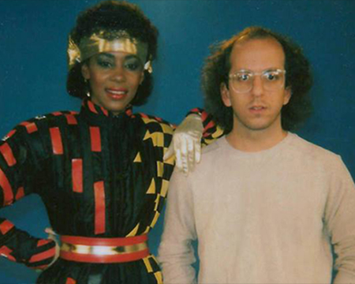
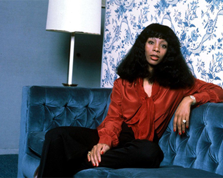

Lipps, Inc.
Toda la información y noticias referidas a la banda y sus integrantes.
Información de la banda
Género: Dance/Disco
Localidad Natal: Minneapolis
Sello Discográfico: Casablanca, Polygram, Def Jam
Ubicación actual: Minneapolis
Influencias: Motown, Kraftwork, Jimi Hendrix, The Beatles
Los integrantes más importantes
Después de su separación en el año 1983, no hubo muchas mas novedades por parte de la banda como tal. Aunque si se sabe algo acerca de los miembros más relevantes de la formación.
Cynthia Johnson
Antes de convertirse en la cantante principal de Lipps, Inc. Jonhson había sido conocida localmente por haber ganado en 1976 el Miss Black Minnesota, el USA pageant, y también por haber sido la vocalista principal de una banda local durante 7 años, conocida como Flyte Tyme. Luego de haber aprendido a tocar el saxofón también escribió muchas de sus canciones con la banda y también coescibió algunas canciones con Jimmy Jam y Terry Lewis, hoy conocidos como un equipo de escritores y productores ganadores de múltiples premios Grammy. Luego de terminar de gradurase en la Universidad de Minnesota, Cinthya siguió con la banda Flyte Tyme por un tiempo más, al poco tiempo de abandonarla, la banda se convirtió en The Time, una banda secundaria del mismo Prince.
En el año 2013 la cantante sacó un disco como solista llamado All That I Am, siendo la escritora y productora del mismo.
Steven Greenberg
El productor, escritor y multi instrumentista, nacido en St. Paul, Minnesotta el 24 de Octubre de 1950 empezó a tocar la batería cuando tenía 15 años y fue miembro de varias bandas de rock locales. Escribió y produjo su primer disco a los 20. A mediados de los 70's, diseñó el "Discomobile", el cual era una unidad de disco-deejay móbil que podía usarse para fiestas y casamientos.
A finales de los 70's produjo el disco single de "Rock it", el cual fue un éxito local importante, y le permitió comenzar con su proyecto de banda "Lipps, Inc" y anotar el super éxito y hit número 1 con "Funkytown" aunque luego de eso nunca pudo superar el monumental éxito de esa tema en particular. En el año 1993 creó una compañia disquera independiente "October Records". En el año 1998 escribió y dirigió el documental "Funkytown".
En el 2003 abandonó su carrera musical para dedicarse al diseño web, ahora siendo el propietario de Designstein.
Galería de imágenes
- 


- 